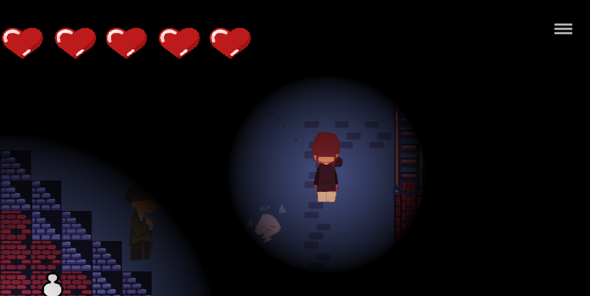

【游戏制作记录】
参加Game Jam Fall2019,48小时限制游戏制作的活动记录.
游戏名称: U.N.OWEN.
制作软件: Unity和Photoshop.
哟.
继上次记载是半年多了,Winter的时候也参了game jam.
上次的游戏叫HomePacker(简称HPer),主角是小怜.是跟室友三人组一起参的活动,做的东西非常的自我.是尝试.
这次的想法不大一样,勉勉强强也是走完了全程,老规矩记载一下.
这篇文章主要是【记载过程】,我也是完完全全初学者,比起技术更多的是心情的记载.
如果有类似兴趣的朋友就把这次的文章当做休闲的杂谈吧.
文章聊了【制作时的杂谈】【我们的游戏】【其他人的游戏】.
先从制作时开始吧.
今年Winter是我第一次走完全程的game jam.博客里也有记录,但上次做的游戏实在太过于黑历史就不贴链接了.
这次想好好的走完game jam,所以提前联系了认识的cs专业的大佬朋友,也是位画画的小姐姐Chloe一起来.
也鼓起勇气(社恐努力了)在最初分组的时候遇到了两位工程系大一的男生,Steven and Long,加上我安心的室友Sophia一共五个人组的Team.
实体的编码活动认识人都是福分,如果能有这个机会请务必抓住.
这次应该不是全球性的活动而已我们学校自己组的game jam,主题是create unknown.
第一次有五个人的team,最大的体会是组队的话进度真的会很快.
Long有unity2D游戏制作的经验,我也是学的2D,定下了使用的软件和大体的方向之后开始讨论主题.
Steven和Chloe从unknown联想到无人生还,我久仰大名但没有补过的作品,定下的是用小说情节改编的冒险系探索.
在房间内探索9个人的亡魂,跟他们的对话猜测凶手.
讨论的时候很快,大家都会扔出自己的想法来,从一个想法跳跃联想到另一个想法(哇没注意的话还真有些跟不上,大家都是人才,说话又好听.jpg).
写在纸上划分工作量,然后排序哪些先做先实现谁来做.
如果有没理解的多问很多次确认对方的意思,两位男生人也很好很有耐心,如果重复制作就非常尴尬了.
顺便一提分工是我做的,可能人是我组来的就成了默认的leader.去买晚饭的路上Sophia跟我谈有些不满,她希望能有更多的工作.
说实话还真没注意到分量问题,按大家的兴趣我分工作.看来我组织能力不大行.这一点还真得注意.
卖完饭之后跟组员再次讨论,希望是她想做的内容.
但这个人熬夜看教程,第二天睡到了下午两点.工作都被Long大佬做掉了.
唉.
我们回到制作的话题上来吧.
游戏的基本实现是
【人物的行走】【人物的攻击】【敌人的行动】【跟npc的对话】【跟npc对话结束后触发最后猜测凶手的剧情】【结局页面】
上次HPer我负责了实现阿怜走路,就继续把上次的码和文件继承过来,再加上美术和人物探索的灯光效果.
阿怜行走图上次我画的非常用心,甚至画的时间看完了一季12集的百合露营…这次是准备以编码为主的.
夏天的时候花了一个月走了几个Unity的教程,希望能在这方面帮上忙更多一些.但没有美术不行555.
游戏美术可以非常直观的告诉观众【这游戏在做什么】.HPer的初版我没有做视觉效果的设计只是【把小女孩努力画可爱】最后的效果也是非常糟糕的(悔恨的泪.jpg).
经历过上次的丢人之后……目标是【将东西说清楚就行!】的美术素材实现.毕竟是限时活动.
↓丢人选手怕时间来不及,都是先做一个无色版本测试,码编好了再上次加更多细节↓
↓十分钟小幽灵↓
↓Chloe扔给了我电影评析去看,我照着画的9个人,但因为秃头大叔太多分不清谁是谁,大家最后选择瞎选↓
Chloe整理好了NPC的对话,我还在实现人物行走她就帮我上色了.
啊,有会画画的小姐姐真好!!我爱她!!
Steven负责了地图的背景.使用Tilemap实现的,唔,用中文说的话就是rpg maker那样的用单元素材平铺地图.能画的很快,Tilemap也可以处理墙壁Collision(触碰)的问题,非常的好用,学习到了.
Chloe因为还有作业死线就先走了(滑 铁 卢 人 没 有 生 活),Steven帮我又涂了个管家.
我:你怎么用网页ps…
Steven:其实我在十年级后就没再开过ps.
我:那为什么自我简介的时候要说自己会美术,说会编码不更好吗.
Steven:比起编码我还不如说自己会美术.
原来如此,我懂我懂.编码就是让人自闭.
顺便一提在我们讨论的时候主办方小姐姐找我们起队伍名称,是最让人期待的环节了!
Chloe起了404-not-found,非常的贴近unknown了!
Steven做的map也是404的图案.是彩蛋.
↓我们的地图↓
Long负责了大部分的游戏实现,做的时候更加能感觉出来他很强.
这次能感觉到合作时需要注意的事情.
我和Long得会用到Player下面的东西,如果在编辑同一文件的时候很容易出Conflict(冲突).这时候都得手动修改.
我先拷贝了阿怜的行走码到我们这次的主角身上,Long在写自己的东西时改掉了我的一部分然后出了bug.
自己写码的时候……有时会复制黏贴,能run起来就行了!的这种不负责任想法真的会在合作时候被人打爆狗头.
将自己的码好好的想懂,哪些必须要留下来,哪些得删.Long的码到底在写什么.他改了我哪里等等.
好在看了一个月的Unity之后大约是懂了基本操作原理.跟着别人视频教程依葫芦画瓢还真不大行……编码太考验逻辑了,糊弄不过去的.
(很多次都因为没有从头到尾的考虑而bug了,oh~想打死自己.)
感谢Long大佬,没有他进度不会那么快的.
不过说起来还有一点非常在意的地方.
Chloe习惯于用GitHub多人合作了(毕竟是正统编码人).Unity 文件我们用GitHub试了一个晚上,经常出错.
Unity自带多人合作,不过免费的只有三个人的账号可以用.
我的知识范围内的解决方法是让没有log进来的Sophia每次用Export package的方式传给我,我再上传给他人.很麻烦.
如果可以的话想解决掉这个问题啊……
我:我忘了如何用git!!!!
Chloe:lol
Git add .
Git commit -m “something meaningful”
Git push
我:You are my life saver.
再忘干脆纹身上算了.
关于【人物的攻击】这块是Long和Steven做的.
在远程攻击和近距离攻击里选择了远程发射子弹.敌人则是一种远程一种近战.
测试的时候经常会听到:
Long:Shot me!!!!!
孩子疯了.
Steven:射我!!!!!
?
制作时的闲聊大概到这里,然后来聊聊这次做出来的游戏吧.
这次调节了主页面呢.
点开始之后就会有文字打字机的效果一样出来,是我很想学的,等等去偷看他们的代码.
然后是游戏本体了.
不得不说把灯一关真的是界面粗糙的地方都被遮住很多了orz.
灯我调了个随机闪烁,虽然不截gif看不出来…这次就偷懒啦!
因为我推荐给Sophia的教程里有调节音乐的方法,她调试了很久.
她跟我强调无数遍这里的menu设置跟主页面的音量设置是数据保留的超难的,好好好给她截图上来.
跟NPC说话也是会有字打出来!
还保留了些古英文的台词,整理log的Chloe强强.

看到了伐若隐若现的小幽灵.
讲真我的技术很差,再近一点会被打死.
音乐选的很良心的.背景音是Sophia半夜把自己吓死前选出来的.射击时的枪声和开门声是Long调节的.效果蛮好蛮好.
也若隐若现的左下角是记载9个人是否有全触发完的小兵雕像(按照小说).每调查完一个人就会消失一个,用来记载进度.
最后可以猜测犯人.
猜对就赢啦!
看上去比HPer完整很多(),虽然showcase的时候还是感觉到了很大的差距2333.
是的最后是showcase的时间!!看大佬们的游戏,game jam最大的乐趣之一.
我们虽然是使用了Unity,做2D player探索…但游戏这个词果然是广泛的.
有可玩性的都是游戏.
做策略桌游的,用ppt做选择冒险的,做文字小说游戏的,做3D双人冒险的,做联网坑队友游戏的…都有!!!!
也是从完全不编码到——>卧槽这是3A游戏吗?都有!!!
挑几个讲吧.
3A游戏指的是有一组大佬做了3D双人双视角的陀螺打架游戏,是完成度最高的游戏.嘛……直接说可以上街机也不奇怪.
Camera的设定相当自然,开始时是双视角,当一方开始开大,做那种……如龙带特效连环拳xx之后又切回一个远距离俯视Camera.我没文化,只能说炫酷,高级,无敌.虽然还有些bug需要修,但操作上可玩性相当强.
还有一款完成度很高的是款塔防游戏.
按时间攒点布置自己的士兵,有意思的是自己的塔和兵和敌人都是可以鼠标移动的.就是一边在布置士兵还一边在用鼠标移除敌人.
这种让玩家手忙脚乱的感觉真是不错.
做了三种士兵也做了三种敌人.引擎用的是Godot(终于记住了名字x).
做3D的人还是蛮多的.
有款很可爱的是双人小鸡的游戏.两个玩家操控自己的小鸡来移动物品,渡河解密.没有做鸡的动画,是乱滚的移动的.但checkPoint很有意思,是让鸡通过篝火点燃它.这个feature做的我相当喜欢(这个是Unity做的).
不编码的那组用ppt实现文字冒险其实做的意外精良.
很好的利用了点击的特效,gif的图片,图片的进入离开特效等等.小故事也很有趣.很一致性.
相比下还有组也没有写码,可是那一组没有把游戏做出来.
那一组有六个人,是大团队了.Winter时做四玩家视角捉鬼游戏也是个大团队所以会有些些期待.可惜那组估计大家都是artist,有做音乐的,有做背景美术的,有做动画的,还有个演讲时特会讲,怕不是商科的兄弟.
的确他们有很酷的idea和超棒的美术.但游戏本体都没有实现果然还是很难说做了个游戏.
介绍说是第一次使用Unity,果然还是会吃力吧.最后是用ppt来展示idea的.讲真也没有过于复杂的游戏机制,如果能有个码农队友一定能做出个好游戏的.
不管怎么样都得做出来才行.
这也想聊聊考虑选Unity的事情了.
Unity本身是自由度很高的引擎了.刚入学的时候我只知道RPG maker,Winter时的确也有人使用了RPG maker来做冒险小说游戏.
自由度很高意味着可以做很多脱出框架的想法,但同时也会把明明可以不用自己编的框架重新做一遍,比如说我写的行动码.
以为编码也是一个重要学习的事情,但在夏天自学的一个月里也是干了些……诶等等我这不是在编个RPG框架出来吗我为什么要选Unity的事情.
果然还是因为从小看大的free game系列对自己的影响太深,我对game play没有很好的想法.
这次没有室友三人组一起去也是跟飞哥,我的人生导师,有了意见分歧.
重商业化的游戏还是比较有限的.
也许是因为飞哥不是创作者吧…说了些什么…【jrpg是没有未来的】【不圈钱的游戏都是耍流氓】【我的爱好实在是过于偏门】之类的暴言.
我明白飞哥的顾虑,我也很感谢,都是吃不吃得上饭这样重要的事情.
在现在看来因为自己的能力过于糟糕,我大概还是没有什么余地的.看了那么多大家的游戏要好好学啊!!
游戏是media,跟绘图跟小说那样的宽广的.最初喜欢的只有故事而已,为了表达故事而选择media.
我也没能做出选择,只是跟贼忙工程系的Long和Steven聊天的时候时候觉得自己再努力一点就好了.
大家都辛苦了,在showCase之前也好好保持了游戏的可运行x.
最后散场时跟Steven和Sophia去同德园吃饭,三个人有话没话的乱聊.聊自己看过的小说自己看过的动画.
Steven说自己很悲观,喜欢看anti-humanity的题材.
我想了想,说自己喜欢看西尾,他经常会暴露很多G向的片段.
Sophia说自己喜欢脆皮鸭喜欢了很多年.
我们都没能接上话,应该是Sophia赢了吧(?).
就像这样的乱聊,我还是很喜欢的.
生活还是一样会继续,能在这个周末跟大家相遇做一个游戏真是个奇迹.
明天还是得继续赶due,感冒了一周都没好,但game jam结束了没那么大压力了.
那么祝我们有缘下次还能聊game jam的话题吧.
辛苦了辛苦了.